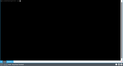

Yakuake
Dieser Artikel wurde für die folgenden Ubuntu-Versionen getestet:
Ubuntu 16.04 Xenial Xerus
Ubuntu 14.04 Trusty Tahr
Zum Verständnis dieses Artikels sind folgende Seiten hilfreich:
Yakuake  (Yet another Kuake) ist ein auf dem KDE-Programm Konsole basierender Terminal-Emulator. Yakuake wurde vom Terminal des Spiels Quake inspiriert: ein Hotkey bewirkt, dass sich das Fenster vom oberen Bildschirmrand her ausrollt. Durch erneute Betätigung des Hotkeys wird das Terminal wieder eingefahren. Das gleiche Prinzip findet auch bei Kuake (veraltet) und bei Tilda Anwendung. Unter GNOME kann alternativ Guake benutzt werden.
(Yet another Kuake) ist ein auf dem KDE-Programm Konsole basierender Terminal-Emulator. Yakuake wurde vom Terminal des Spiels Quake inspiriert: ein Hotkey bewirkt, dass sich das Fenster vom oberen Bildschirmrand her ausrollt. Durch erneute Betätigung des Hotkeys wird das Terminal wieder eingefahren. Das gleiche Prinzip findet auch bei Kuake (veraltet) und bei Tilda Anwendung. Unter GNOME kann alternativ Guake benutzt werden.
Da das Programm permanent im Hintergrund läuft, ist es nach der Betätigung des Hotkeys sofort verwendbar. Im Gegensatz dazu muss man bei anderen Terminalprogrammen meist einige Sekunden warten, bis sie geladen sind. Yakuake eignet sich also besonders für Benutzer, die häufig ein Terminal öffnen und schließen.
Die Anwendung unterstützt sowohl Tabbing als auch Splitscreens. So kann man beispielsweise in einem Tab zwei Terminal-Sitzungen übereinander anordnen, während sich in einem anderen Tab zwei nebeneinander angeordnete Sitzungen befinden, usw.
|  |
| Yakuake Konsole |
Installation¶
Folgendes Paket muss installiert werden [1]:
yakuake (universe)
 mit apturl
mit apturl
Paketliste zum Kopieren:
sudo apt-get install yakuake
sudo aptitude install yakuake
Benutzung/Konfiguration¶
Nach der Installation findet sich Yakuake im K-Menü unter "System". Beim Starten erscheint in der linken, oberen Ecke eine Kurzinfo, dass das Programm erfolgreich gestartet wurde und mit der Taste F12 aufgerufen wird.
Um eine komfortable Benutzung zu gewährleisten, sollte Yakuake beim Start von KDE automatisch geladen werden. Siehe hierzu Autostart.
Yakuake-spezifische Einstellungen¶
Yakuake besitzt keine Menüleiste. Im rechten unteren Eck des Yakuake-Fensters befinden sich 3 Symbole, wobei das mittlere das Menü öffnet. Wichtigster Punkt ist hier "Globale Kurzbefehle einrichten...", wo man anstatt der Taste F12 eine beliebige andere Taste oder Tastenkombination wählen kann. Hat man seine Tastenkombination einmal vergessen oder gelöscht, kann man sie in der Datei ~/.kde/share/config/yakuakerc einstellen. Weiter kann man mittels "Yakuake einrichten..." das Aussehen und Verhalten von Yakuake festlegen. Die Einrichtungsoptionen sind selbsterklärend.
Derzeit stehen 3 Designs zur Verfügung: Default und Plastik in den Versionen Dark und Light.
Achtung!
Die Designs Default und Plastik Light verwenden Pseudotransparenz, das heißt ein Teil des Desktop-Hintergrundbildes wird übernommen. Unter GNOME funktioniert dies nicht. Als Alternative gibt es bei kde-look.org eine modifizierte Version des Default-Designs ohne Pseudotransparenz. Man findet dort mit dem Suchwort Yakuake auch einige weitere Designs.
Experten-Info:
Wer selbst ein Design erstellen will, kann die Dateien unter /usr/share/kde4/apps/yakuake/skins/ als Vorlage nehmen, und nach getaner Arbeit alles in ein .tar.gz-Archiv packen.
Konsole-bezogene Einstellungen¶
Da Yakuake auf dem Programm Konsole basiert, lässt sich das Aussehen des Textbereichs genau wie bei Konsole einstellen. Diese Konfiguration geschieht durch Rechtsklick und anschließende Auswahl des Untermenüs Einstellungen. Hier kann man z.B. festlegen, dass Yakuake die aktuelle Konfiguration von Konsole übernehmen soll. Wenn man das nicht möchte, kann man natürlich auch ein abweichendes Aussehen festlegen. Damit dies auch bei der nächsten Sitzung geladen wird, muss man den Punkt "Als Standard speichern" wählen.
Einige Einstellungen von Konsole werden übernommen, lassen sich jedoch nicht von Yakuake aus ändern. Beispiele sind die Benachrichtigungs-Einstellungen, die Liste benutzerdefinierter Farbschemata oder auch der Punkt "Größenveränderungen des Fensters anzeigen". Derzeit ist die Änderung dieser Einstellungen nur möglich, indem man Konsole startet, die entsprechenden Änderungen durchführt, und anschließend Yakuake neu startet.
Unter GNOME gilt: pseudotransparente Hintergründe sind nicht verwendbar (vgl. auch Hinweis oben). Die Häkchen bei Transparent in den Farbschema-Einstellungen funktionieren also nicht.
Tastenkombinationen¶
Hinweis:
Alle genannten Tastenkürzel sowie weitere lassen sich bei (Pfeil-Button) -> Kurzbefehle festlegen... individuell anpassen.
Per Voreinstellung sind folgende Tastenkombinationen festgelegt:
| Tastaturbefehl | Funktion |
|
Strg +
⇧ +
Einfg oder Strg + ⇧ + V | Markierten Text an die Cursorposition kopieren |
| ⇧ + Einfg | Inhalte der Zwischenablage an der Cursorposition einfügen |
|
Alt +
⇧ +
→ und Alt + ⇧ + ← | Fensterbreite einstellen |
|
Alt +
⇧ +
↓ und Alt + ⇧ + ↑ | Fensterhöhe einstellen |
|
Alt +
Strg +
N oder ⇧ + Strg + N | Neuen Tab erstellen |
| Strg + ⇧ + ← | Aktuellen Tab nach links verschieben |
| Strg + ⇧ + → | Aktuellen Tab nach rechts verschieben |
| Alt + Strg + S | Aktuellen Tab umbenennen |
| Strg + ⇧ + R | Aktuelles Terminal schließen |
| Strg + ⇧ + L | Aktuelles Terminal senkrecht teilen |
| Strg + ⇧ + T | Aktuelles Terminal waagrecht teilen |
| Strg + ⇧ + F | Vollbildmodus an/aus |
| ⇧ + F1 | Direkthilfe |
| Strg + ⇧ + ↑ | zum nächsten Terminal wechseln |
| Strg + ⇧ + ↓ | zum vorigen Terminal wechseln |
| ⇧ + → | zum nächsten Tab wechseln |
| ⇧ + ← | zum vorigen Tab wechseln |
 Übersichtsartikel
Übersichtsartikel- Erstellt mit Inyoka
-
 2004 – 2017 ubuntuusers.de • Einige Rechte vorbehalten
2004 – 2017 ubuntuusers.de • Einige Rechte vorbehalten
Lizenz • Kontakt • Datenschutz • Impressum • Serverstatus -
Serverhousing gespendet von